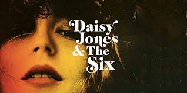

Depois de “Através da Minha Janela”, a Netflix investe na continuaçao. A expectativa é que o segundo filme adapte o segundo livro da trilogia “Os Irmãos Hidalgo” da escritora venezuelana Ariana Godoy. O foco sai de Ares Hidalgo e Raquel e passa para Ártemis Hidalgo, o irmão mais velho.
O Amazon Studios adquiriu os direitos do livro “Um Ano Inesquecível”, que reúne quatro contos, cada um assinado por uma escritora para uma estação do ano: Paula Pimenta (inverno), Babi Dewet (outono), Bruna Vieira (primavera) e Thalita Rebouças (verão). Um deles é dirigido por Lázaro Ramos e tem participações de IZA e Lulu Santos.
O Prime Video já gravou uma série inteira baseada no livro “Daisy Jones & The Six”, de Taylor Jenkins Reid, que conta a história de uma banda fictícia. A produtora de Reese Witherspoon tocou o projeto para o serviço de streaming. O elenco será encabeçado por Riley Keough como a cantora Daisy Jones e Sam Claflin como o líder Billy Dunne.
